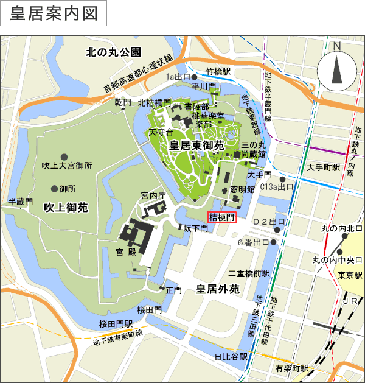
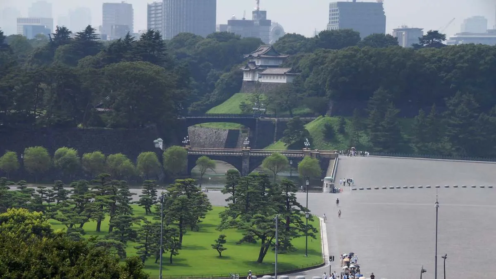

English
English
 日本語
日本語
东京站、皇居
东京站是必看的景点。作为新干线的出发站，它是一个大型车站。车站周围的景色非常美丽，是现代高层建筑与绿意盎然的自然相融合的地方。
步行约15分钟即可到达宽广的皇居。
东京站
东京站于1914年12月开业，已有100多年的历史。由日本近代建筑之父辰野金吾设计的“东京站红砖站舍”南北延伸约335米，像展开的翅膀一样建造，环绕一周可以看到美丽的办公楼和商业设施。

东京站周边
东京站周围有美丽的街道，非常适合拍照。丸之内仲通是其中的主街道。石板路和街道树木非常美丽，街道两旁有高档品牌店和咖啡馆。还有许多艺术雕塑，让你仿佛置身于外国。
KITTE是部分保存和再开发旧东京中央邮局建筑的商业设施。即使不购物，也值得一看。里面有免费的展品。由日本邮政和东京大学综合研究博物馆共同运营，展示了东京大学自开校以来约140年间积累的学术标本和研究资料。
位于6楼的屋顶花园“KITTE花园”绿意盎然，是丸之内地区的最佳观景点之一。

和田仓喷泉公园
从东京站的丸之内中央口步行约7分钟即可到达和田仓喷泉公园。1995年为纪念皇太子殿下和皇太子妃殿下的结婚而建的大喷泉是必看的景点。还有其他水景纪念碑和上皇陛下的御制碑。夜晚有灯光照明，呈现出与白天不同的梦幻景象，值得一看。

皇居外苑
从东京站沿行幸通步行15分钟即可到达“皇居外苑”。这里有一个大草坪公园，点缀着松树。还有保留着江户城风貌的护城河、“樱田门”等城门，以及皇居的象征二重桥和楠木正成的铜像等历史建筑。
 皇居一般参观路线
皇居通常的观光也很有趣，但如果你想深入了解内部，推荐参加“皇居一般参观路线”。
【景点详情】
名称：皇居参观
集合地点：皇居 桔梗门
容量：【当天登记】每次300人（先到先得，发放整理券）
【提前申请】每次200人
※ 未满18岁的未成年人需要成年人的陪同。对于初中生及以上，如果有学校等的申请，最多可9人参观。
时间：【上午场】
9:00 - 发放整理券
9:30 - 开始登记
10:00 - 开始参观
11:15 - 参观结束
【下午场】
12:30 - 发放整理券
13:00 - 开始登记
13:30 - 开始参观
14:45 - 参观结束
※ 携带物品：请务必携带能够确认本人身份的证件（驾驶证、个人编号卡、护照、在留卡、健康保险证等）（※ 复印件不可）
※ 当天登记的情况：携带能够确认本人身份的证件，在皇居桔梗门前集合。参观开始时间前1小时发放整理券。入门后填写参观申请表。
※ 提前申请的情况：从参观指南网站内的“参观申请”进行申请。从希望参观日期前一个月的1日5:00开始，到希望日期前4天完成申请手续。
官方网站：https://www.kunaicho.go.jp/event/sankan/sankaninfo.html

参观当天，请在桔梗门领取参观整理券。通常情况下，这个门是不能通行的，但参加皇居一般参观路线的游客可以从这里进入。

首先，沿着桔梗门旁的小路前进。在弯曲的道路旁，你会发现一座小城堡般的建筑！这是建于江户时代的江户城本丸南隅的富士见櫓。

你是否曾在电视上看到天皇和皇后在新年一般参贺或天皇生日一般参贺时挥手的画面？这个地方就是“宫殿东庭”。在这些一般参贺的日子里，任何人都可以通过皇居正门，从这里看到天皇和皇后的身影。这个广场一次可以容纳2万人。